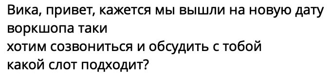
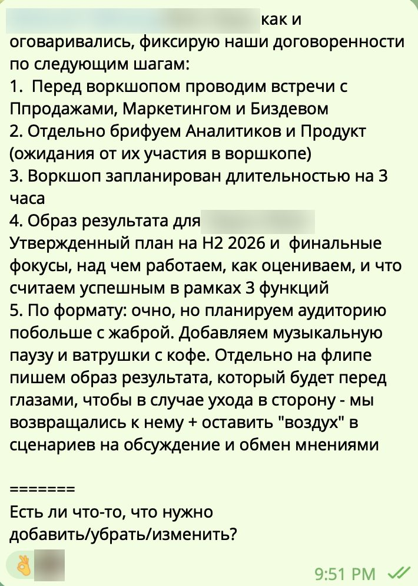
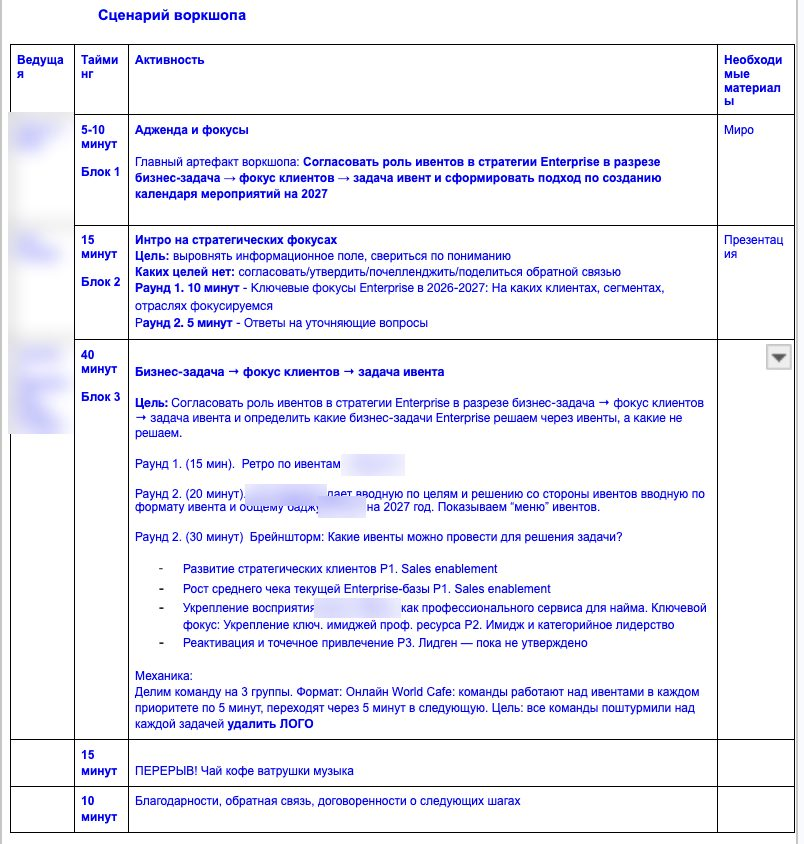
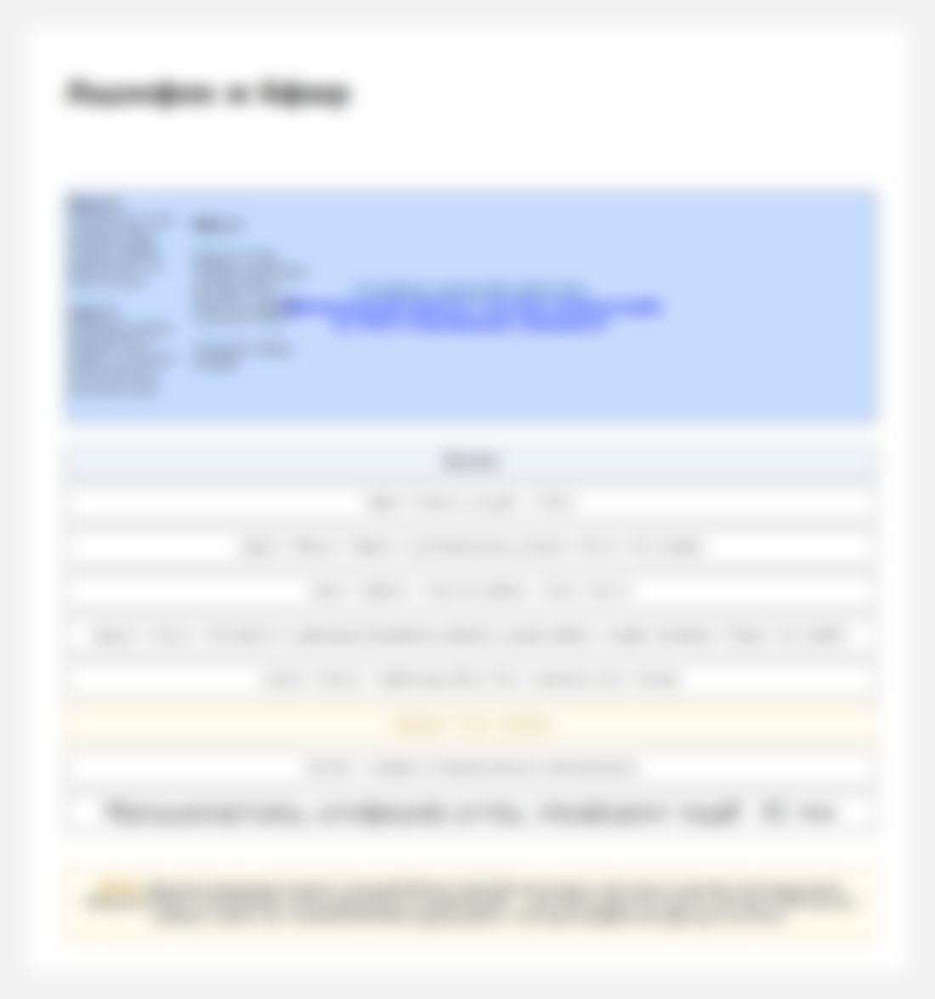
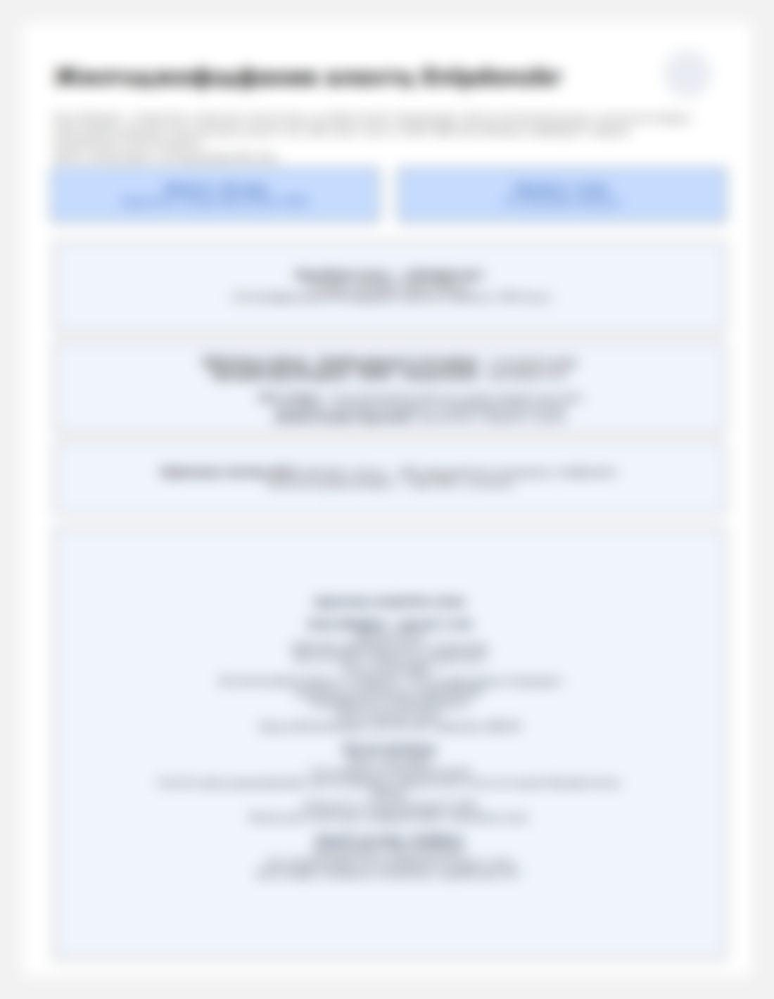
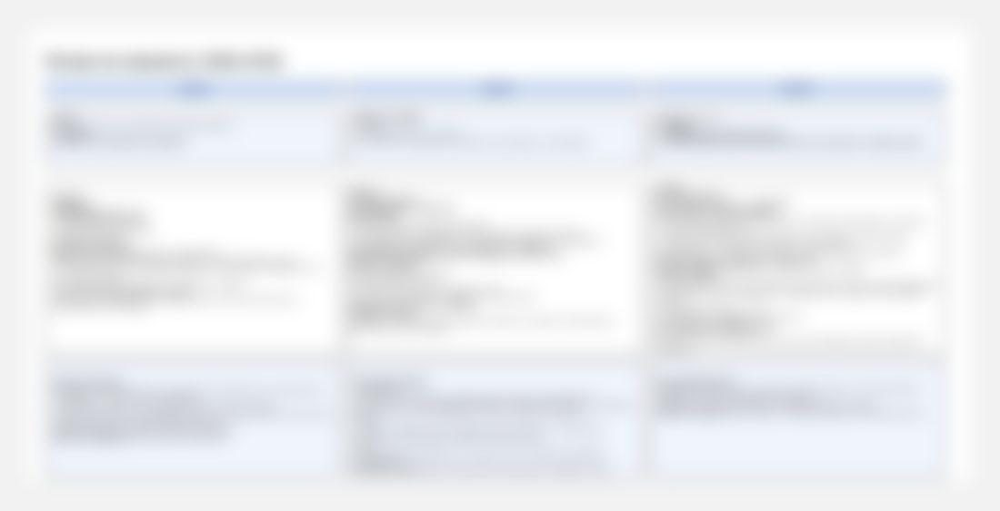
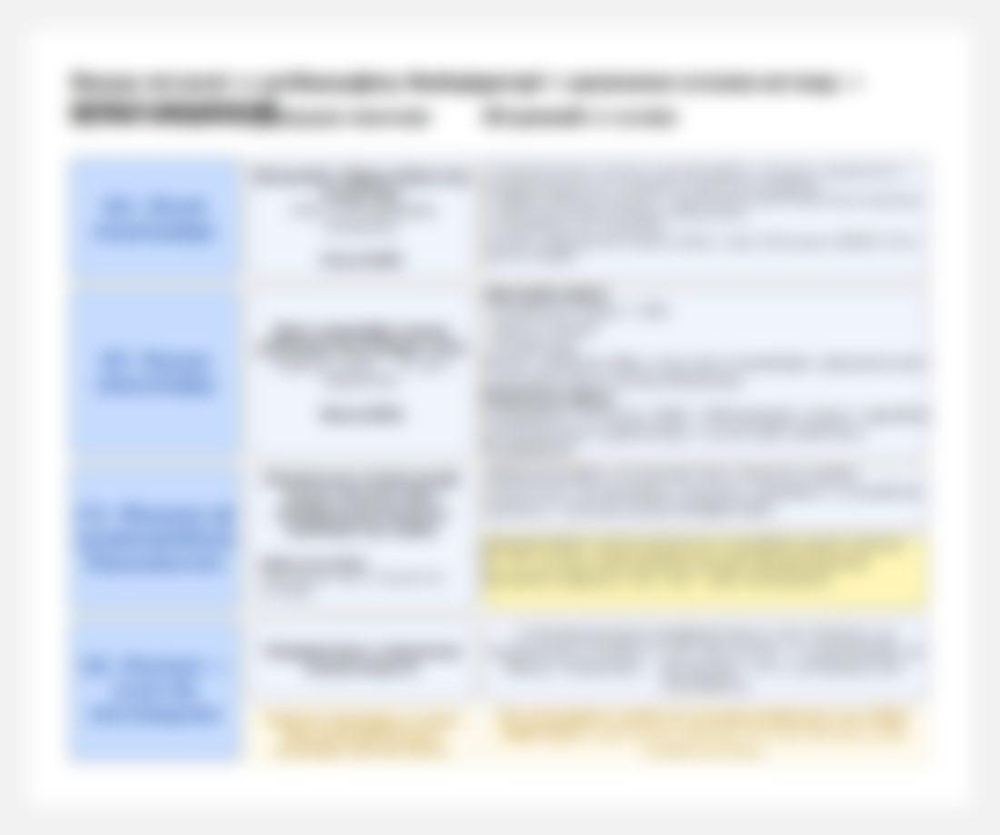
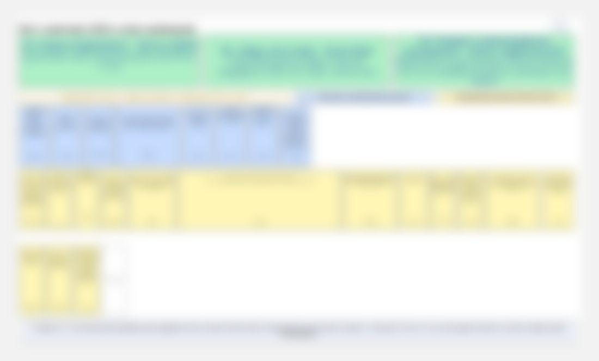
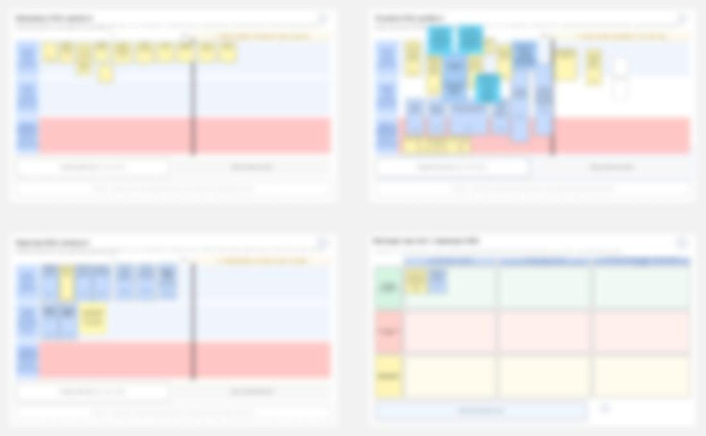

В июле функции договорились, на каких клиентах сосредоточиться в 2027 году. В сентябре предстояло обсудить, какую роль в работе с этими клиентами играют мероприятия и по каким принципам собирается портфель на 2027 год.
Компания собирала стратегию на следующий год. Стратегии сегментов, маркетинга и продуктов сводились в одну, и только после этого распределялся бюджет на мероприятия.
В первый воркшоп серии маркетинг, продажи и команда мероприятий договорились, каких клиентов считать стратегическими. Разговор о форматах мероприятий тогда намеренно отложили до следующей встречи.
К сентябрю роль мероприятий оставалась открытым вопросом. Функции приходили с разными ожиданиями от одних и тех же форматов, и обсуждение распадалось на частные мнения.
Прежняя ставка на привлечение новых клиентов через мероприятия перестала давать результат, а новая задача канала еще не была сформулирована. Ресурс при этом ограничен: новый формат появляется только за счет отказа от старого.
«Определить формат и целевую аудиторию мероприятия, который ляжет в стратегию сегмента на 2027 год»
Мы сформулировали 4 цели:
Подготовка заняла две недели — от назначения новой даты до утра воркшопа.
Клиенты вернулись ко мне с повторным запросом на проведение сессии
Я подготовила вопросы к воркшопу по 4 блокам: статус договоренностей первого воркшопа, цель и образ результата, участники и роли, данные и подготовка.
На встрече определили, к какому результату нужно прийти на воркшопе.
После встречи в чате написала о наших договоренностях
Я собрала обратную связь у участников предыдущего воркшопа: что в предыдущем воркшопе помогало достичь цели, а что отвлекало.
Согласовала изменения по инструментам проведения (так, например, вместо листов флипчарта мы договорились работать в онлайн-доске, чтобы вовлечь аудиторию онлайн)
Провела 2 встречи с ключевыми участниками воркшопа, чтобы свериться по ожиданиям и вопросам, которые им важно обсудить.
На основе этой информации спроектировала сценарий сессии
Вместе с командой заказчика стали собирать рабочий документ с фактурой и логикой встречи: стратегия сегмента, место мероприятий в стратегии, меню форматов и портфель 2027 года.
Я прислала сценарий за 5 дней до сессии, попросив оценить его по 5 вопросам: все ли учтено, решает ли сценарий задачи воркшопа, верно ли расставлены акценты, чем пожертвовать при нехватке времени, что исправить и что убрать.
Отдельно вынесли развилки, которые нужно закрыть до встречи: кто решает при расхождении мнений, как говорить об оценке результата, сколько времени отдать ретро по 2026 году
По комментариям заказчиков перенесла в Miro все таблицы из рабочего документа и выстроила фреймы в порядке блоков, сделала диаграммы за три года в едином формате, чтобы сравнивать год к году
Вечером созвонилась с заказчиком, провели прогон сценария и доски с командой заказчика, согласовали состав групп и роли
За 2 часа до старта мероприятия приехала на место проведения воркшопа, проверила аудиторию и связь для онлайн-участников, подготовила аудиторию к воркшопу
Перестроила регламент, когда блок стратегии занял больше времени, чем планировали: перерыв сократили до десяти минут, работу групп продлили.
Отложила споры, которые не решались силами присутствующих, и записала их темами для отдельных встреч.
Фиксировала «под запись» договоренности команд.
Вела доску так, чтобы решения групп и онлайн-участников были видны всем в комнате
Через час по завершении воркшопа выгрузила таблицы доски в PDF, отправила транскрибацию воркшопа и follow-up: договоренности, проблемы, развилки, приоритеты, следующие шаги с ответственными и сроками



Доска собрана в Miro из 14 фреймов и читается слева направо в порядке блоков сценария: маршрут встречи, стратегия сегмента, ретроспектива, роль мероприятий, меню форматов, поля трех групп с копиями меню, матрица для сведения и следующие шаги.
Изображения фреймов обезличены: они собраны по данным доски с сохранением расположения, цветов и карточек, а текст заказчика заменен случайными буквами и размыт.






Функции одинаково понимают роль мероприятий в 2027 году, вывели привлечение новых клиентов из задач мероприятий в этом сегменте, сошлись в принципах отбора форматов и получили три портфеля на 2027 год
Что изменилось за три часа:
«Мы второй раз честно поговорили. Первый раз у нас был воркшоп два месяца назад, сейчас второй раз. Открыто и честно поговорили, как мы будем пытаться выиграть эту территорию»
Руководитель департамента маркетинга
«Сегодня супер продуктивно прошло… Мне очень нравится»
Руководитель направления по работе с ключевыми клиентами
«Вика, спасибо тебе за организацию и за помощь! Очень продуктивно получилось»
Менеджер по продуктовому маркетингу B2B
«Да, Вика, спасибо, мы точно в позитивной динамике — это большой результат»
Руководитель команды организации мероприятий